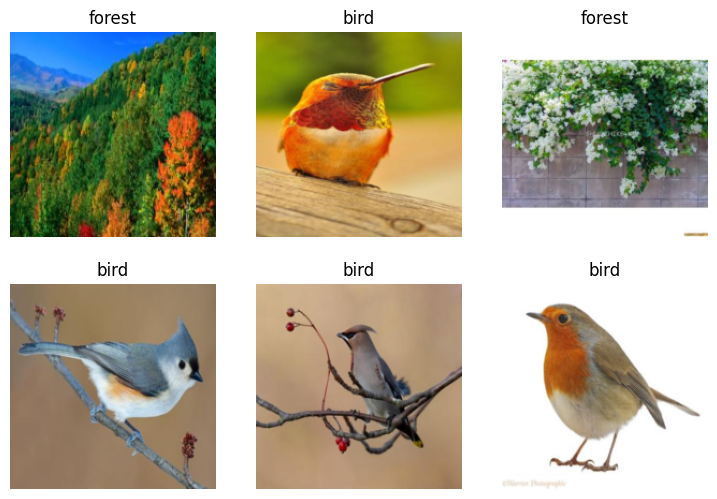

import os
iskaggle = os.environ.get('KAGGLE_KERNEL_RUN_TYPE', '')
if iskaggle:
print('Is running on Kaggle.')
!pip install -Uqq fastaiIs it a bird?
This notebook is following the first lesson in the fast ai Practical Deep Learning for Coders course
The resources related are as following: 1. Lesson 1 lecture 2. Deep Learning for Coders with Fastai and PyTorch: AI Applications Without a PhD Chapter 1 3. Course notebooks
Detect if notebook is running on Kaggle
It’s a good idea to ensure you’re running the latest version of any libraries you need. !pip install -Uqq <libraries> upgrades to the latest version of
Step 1: Download images of birds and non-birds
# Skip this cell if you already have duckduckgo_search installed
!pip install -Uqq duckduckgo_search
!pip install -Uqq fastai
!pip install fastdownloadRequirement already satisfied: fastdownload in /home/jafar/miniconda3/lib/python3.12/site-packages (0.0.7)
Requirement already satisfied: fastprogress in /home/jafar/miniconda3/lib/python3.12/site-packages (from fastdownload) (1.0.3)
Requirement already satisfied: fastcore>=1.3.26 in /home/jafar/miniconda3/lib/python3.12/site-packages (from fastdownload) (1.7.29)
Requirement already satisfied: packaging in /home/jafar/miniconda3/lib/python3.12/site-packages (from fastcore>=1.3.26->fastdownload) (24.2)from duckduckgo_search import DDGS
from fastcore.all import *
def search_images(keywords, max_images=200): return L(DDGS().images(keywords, max_results=max_images)).itemgot('image')Let’s start by searching for a bird photo and seeing what kind of result we get. We’ll start by getting URLs from a search:
urls = search_images('bird photos', max_images=1)
urls[0]'https://images.pexels.com/photos/97533/pexels-photo-97533.jpeg?cs=srgb&dl=animal-avian-bird-97533.jpg&fm=jpg'…and then download a URL and take a look at it:
from fastdownload import download_url
dest = 'bird.jpg'
download_url(urls[0], dest, show_progress=False)
from fastai.vision.all import *
im = Image.open(dest)
im.to_thumb(256,256)
Now let’s do the same with “forest photos”:
download_url(search_images('forest photos', max_images=1)[0], 'forest.jpg', show_progress=False)
Image.open('forest.jpg').to_thumb(256,256)
Our searches seem to be giving reasonable results, so let’s grab 200 examples of each of “bird” and “forest” photos, and save each group of photos to a different folder:
searches = 'forest','bird'
path = Path('bird_or_not')
for o in searches:
dest = (path/o)
if dest.exists():
print(f"Directory '{dest}' already exists. Skipping search, download, and resize for '{o}'.")
continue # Skip the rest of this loop iteration and move to the next search term
dest.mkdir(exist_ok=True, parents=True)
results = search_images(f'{o} photo')
download_images(dest, urls=results[:200])
time.sleep(5)
resize_images(dest, max_size=400, dest=dest)Directory 'bird_or_not/forest' already exists. Skipping search, download, and resize for 'forest'.
Directory 'bird_or_not/bird' already exists. Skipping search, download, and resize for 'bird'.Step 2: Train our model
Some photos might not download correctly which could cause our model training to fail, so we’ll remove them:
failed = verify_images(get_image_files(path))
failed.map(Path.unlink)
len(failed)/home/jafar/.local/lib/python3.10/site-packages/PIL/Image.py:3570: UserWarning: image file could not be identified because AVIF support not installed
warnings.warn(message)
/home/jafar/.local/lib/python3.10/site-packages/PIL/Image.py:3570: UserWarning: image file could not be identified because AVIF support not installed
warnings.warn(message)
/home/jafar/.local/lib/python3.10/site-packages/PIL/Image.py:3570: UserWarning: image file could not be identified because AVIF support not installed
warnings.warn(message)
/home/jafar/.local/lib/python3.10/site-packages/PIL/Image.py:3570: UserWarning: image file could not be identified because AVIF support not installed
warnings.warn(message)
/home/jafar/.local/lib/python3.10/site-packages/PIL/Image.py:3570: UserWarning: image file could not be identified because AVIF support not installed
warnings.warn(message)
/home/jafar/.local/lib/python3.10/site-packages/PIL/Image.py:3570: UserWarning: image file could not be identified because AVIF support not installed
warnings.warn(message)
/home/jafar/.local/lib/python3.10/site-packages/PIL/Image.py:3570: UserWarning: image file could not be identified because AVIF support not installed
warnings.warn(message)
/home/jafar/.local/lib/python3.10/site-packages/PIL/Image.py:3570: UserWarning: image file could not be identified because AVIF support not installed
warnings.warn(message)
/home/jafar/.local/lib/python3.10/site-packages/PIL/Image.py:3570: UserWarning: image file could not be identified because AVIF support not installed
warnings.warn(message)14To train a model, we’ll need DataLoaders, which is an object that contains a training set (the images used to create a model) and a validation set (the images used to check the accuracy of a model – not used during training). In fastai we can create that easily using a DataBlock, and view sample images from it:
dls = DataBlock(
blocks=(ImageBlock, CategoryBlock),
get_items=get_image_files,
splitter=RandomSplitter(valid_pct=0.2, seed=42),
get_y=parent_label,
item_tfms=[Resize(192, method='squish')]
).dataloaders(path, bs=32)
dls.show_batch(max_n=6)
num_bird_photos = len(get_image_files(path/'bird'))
print(f'{num_bird_photos} bird photos exist in dataset')
num_forest_photos = len(get_image_files(path/'forest'))
print(f'{num_forest_photos} forest photos exist in dataset')186 bird photos exist in dataset
183 forest photos exist in datasetNow we’re ready to train our model. The fastest widely used computer vision model is resnet18. You can train this in a few minutes, even on a CPU! (On a GPU, it generally takes under 10 seconds…)
fastai comes with a helpful fine_tune() method which automatically uses best practices for fine tuning a pre-trained model, so we’ll use that.
learn = vision_learner(dls, resnet18, metrics=error_rate)
learn.fine_tune(3)| epoch | train_loss | valid_loss | error_rate | time |
|---|---|---|---|---|
| 0 | 0.455893 | 0.168887 | 0.095890 | 01:14 |
| epoch | train_loss | valid_loss | error_rate | time |
|---|---|---|---|---|
| 0 | 0.040055 | 0.001052 | 0.000000 | 01:05 |
| 1 | 0.025476 | 0.000178 | 0.000000 | 01:23 |
| 2 | 0.017576 | 0.000412 | 0.000000 | 01:03 |
Step 3: Use our model (and build your own!)
Let’s see what our model thinks about that bird we downloaded at the start:
is_bird,_,probs = learn.predict(PILImage.create('bird.jpg'))
print(f"This is a: {is_bird}.")
print(f"Probability it's a bird: {probs[0]:.4f}")This is a: bird.
Probability it's a bird: 1.0000